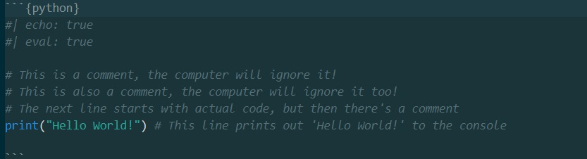
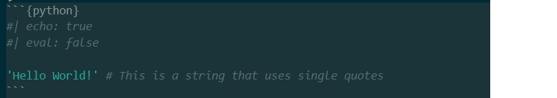
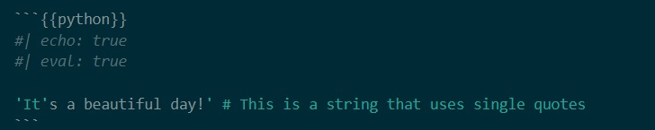
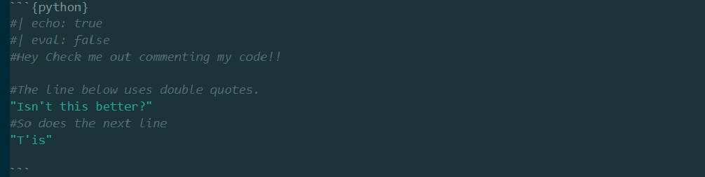

Why the hell isn’t this day 2? A gentle introdcution to programming in python
code.sourceCode { font-size: xxx-large; /* or try font-size: xx-large; */}
Welcome Back!
It’s the second day of the summerschool!! And I promise that by the end of the day you’ll know why this is session 1.0 and not 2.0, and why yesterday was Day 0 and not Day 1.
Before we get back into things…
You guessed it!!
Theres another quiz!
In the Brightspace site, in the Day 1 lesson (on the left hand side of the ‘Content’ tab), there is a quiz called ‘Session 1.0’
Remember, these quizzes are not graded, they’re an opportunity for you to practice recalling the info and to check your understanding.
Work together, look stuff up, and have fun!
Just some reminders …
Things to remember - Software
Quarto is a publishing tool that lets us write documents in markdown and code and then ‘render’ or ‘preview’ them in various formats (APA, website, slides)
Markdown is a simple way to use special symbols in otherwise plain text that quarto can use to make the text all fancy.
We can use quarto extensions like the [‘apaquarto’] (https://wjschne.github.io/apaquarto/installation.html)
VScode is just a fancy text editor, and we can use it to make our writing really efficient and easy.
It can let us view our files and folders, grab paths, and run our analysis as well as write up our esteemed research.
We can use VScode extensions to make it even more powerful, like the ‘quarto’ extension that gives us hints about quarto YAML, or the python extension that highlights code for us.
Things to remember - Paths
Paths are how we find (and point our computer to ) files and folders.
Paths use slashes to separate elements (folders and files) in the path.
They annoyingly use different slashes on different operating systems and different contexts (eg, different in YAML or markdown vs in code cells)
Things to remember - Quarto Documents
There’s quarto markdown documents, which are the most common quarto file.
It has a .qmd extension
It can have code cells and markdown cells
It can be rendered into a variety of formats (we’re even using it to make these slides!)
It’s really good for writing up research, and sharing code and results, most commonly associate with R code.
Things to remember - Jupyter Documents
There’s also jupyter notebooks, which are a different kind of file, but can be rendered into quarto markdown.
They have a .ipynb extension
They can have code cells and markdown cells
They can be rendered by quarto.
They are really good for working with python, and running ‘live’ code.
OK… GO DO THE QUIZ NOW!
Why are you still looking at me?
Today’s Plan
Today we’re going to start learning about programming in python, but…
I want to remind you that we’re not going to be learning to be programmers, we’re learning to be researchers who can use programming to help us do our research.
We’re going to focus on the stuff that you need to know, and stuff that is relevant to you.
So let’s relax and enjoy the process!
Today’s Plan
We’re going to be working with python, and we’re going to be working in jupyter notebooks.
R is a really excellent language that is really good for data analysis and statistics.
Python is also used a lot in data analysis and statistics, but it’s also used in a lot of other fields, like web development, machine learning, and automation.
The languages are really similar, but they have some differences that make them better for different things.
We’re starting with python because it’s just easier, not because it’s better, and we’ll cover R later in the week.
So lets talk about code, shall we?
What is code?
At the microscopic level computers are just a series of switches that can be turned on and off.
Code is just a way of telling the computer which switches (transistors) to turn on and off, and when.
The switches can only be ‘on’ or ‘off’, so we group them together to allow for more complex combinations of ‘on’ and ‘off’.
The more switches we have, the more complex the instructions we can give the computer.
What is code?
When you click your mouse or type on a keyboard, you’re sending signals to the computer to turn on and off switches.
That code is written in a language that humans can read (kinda), and then translated into a language that the computer can understand.
The code above is written in C, a language that is easier (but not easy) for humans to read and write.
The code is telling the computer to ‘write’ the words ‘Hello World!’ to the console (the screen).
The computer can’t understand C, so we need to use a ‘compiler’ to translate the code into machine code.
Over the years we’ve developed a lot of languages that are easier for humans to read and write, and we’ve developed a lot of compilers and interpreters to translate that code into machine code.
What is code?
Python is one of those languages that is easier for humans to read and write.
Python is ‘interpreted’, which means that the code is translated into machine code ‘on the fly’ as it’s run.
It’s actually written in C, which is more complex than python, and C then converts the python code into machine code.
print("Hello World!")
What is code?
As you can see, python is a lot easier to read and write than C, and it’s a lot easier to learn.
So when you write code, you write it in python, which is then ‘interpreted’ by C, which is then translated into machine code.
That’s what’s happening ‘under the hood’ (in a very simplified way).
But you don’t need to worry about that, you just need to write the python code. (It’s actually really interesting though so, y’know, if you get bored…)
OK, lets start looking at some python!
Python Basics - comments
As I said up above, python is just some instructions we can write that the computer can read (via the interpretation).
The computer ‘reads’ the code (top -> bottom, left -> right) and does what it’s told. Buuuut, one of the most important things you can do when coding (particularly when learning) is write comments.
Comments are just notes that you write in your code that the computer ignores.
They’re really important for you to remember what you were doing, and for other people to understand what you were doing.
You can write comments in python by using the # symbol (note that this symbol is used to make headers in quarto).
Anything after the # symbol (in a code block or code cell) is ignored by the computer.
Python Basics - comments
```{{python}}#| echo: true#| eval: true# This is a comment, the computer will ignore it!# This is also a comment, the computer will ignore it too!# The next line starts with actual code, but then there's a commentprint("Hello World!") # This line prints out 'Hello World!' to the console```

Quarto python chunk, this image is taken from this slideshow document!
Python Basics - comments
We really can’t stress enough how important comments are, especially when collaberating with others (and we all know the feeling of panic when coming back to a project after a few weeks and we’ve no idea what we were thinking!!).
As you go through this course, please feel free to add comments to the code chunks/cells to help you remember what you’re doing.
PS: You can also use comments to ‘comment out’ code that you don’t want to run, but you don’t want to delete. You’ll see why this might be useful later on.
Python Basics - data types
As psychologists, you already know about several types of data, particularly quantitative data (numbers) and qualitative data (written language). Generally, we tend to think of data in terms of as large tables of numbers (with value labels, ie 1 = ‘never’), or blocks of text like interview transcripts.
In python, we can also work with these types of data (numbers or words) but we need to think about them a little differently, specifically we need to know what data type a particular piece of data is. There are lots of data types but today we’re going to focus on the 5 most basic types:
strings (called str; ie: words or text),
integers (ints),
floating-point numbers (ie: 1.5, floats),
lists,
and dictionaries (dicts).
Python Basics - str
Strings (str) are just a sequence of characters (letters, numbers, symbols) that are enclosed in quotes.
You can use single quotes (') or double quotes ("to ) enclose a string, but you have to use the same type of quote at the start and end of the string.
You can also use triple quotes (''' or """to ) enclose a string that spans multiple lines.
Lets look at some examples!
Python Basics - strings single quotes
```{{python}}#| echo: true#| eval: false'Hello World!' # This is a string that uses single quotes```

Can anyone tell me what might be problematic about the code above?
Python Basics - strings single quotes
```{{python}}#| echo: true#| eval: true'It's a beautiful day!' # This is a string that uses single quotes```

Is it easier to spot now?
Python Basics - strings single quotes
```{{python}}#| echo: true#| eval: false'It's a beautiful day!' # This is a string that uses single quotes```
The code above is going to cause an error because the computer thinks that the string ends at the second single quote, and then it doesn’t know what to do with the rest of the code.
Like we said, computers are really dumb, they don’t understand context, they just do what they’re told.
It’s particularly annoying if your name has an apostrophe in it (ask me how I know), or if you don’t talk like you’re in a Jane Austin novel.
Python Basics - strings double quotes
```{{python}}#| echo: true#| eval: false#Hey Check me out commenting my code!!#The line below uses double quotes. "Isn't this better?"#So does the next line"T'is"```

More pictures behind the slides!
Python Basics - strings triple quotes
```{{python}}#| echo: true#| eval: false# Below is an *attempt* at a multiline str"I wonderded lonely as a undergradtrying to find their way to the psych labs"```
This will throw an error
Python Basics - strings triple quotes
```{{python}}#| echo: true#| eval: false# Below is an actual at a multiline str, note the three apostrophes'''I wonderded lonely as a undergradtrying to find their way to the psych labs'''```
The code above is going to work because the computer knows that the string starts at the first triple quote and ends at the second triple quote.
It can ‘read’ the invisible character that is the ‘newline’ character, and it knows that the string is still going.
We can also use triple quotes to write really long strings, or strings that have lots of quotes in them.
Python Basics - strings triple quotes
```{{python}}#| echo: true#| eval: false# Below is an actual at a multiline str, note the three quotation marks"""I wonderded lonely as a undergradtrying to find their way to the psych labs"""```
Python Basics - strings - your turn
Now it’s your turn to try writing some strings.
Starting from scratch, create a new folder in the summerschool folder on your computer called ‘Day 1’.
Inside that folder, create a new jupyter notebook called ‘Day 1 - Python Basics.ipynb’.
Create a new code cell in the notebook that looks like this (don’t forget the comments!):
Python Basics - strings - your turn
```{{python}}#| echo: true#| eval: false# print out a string that uses single quotesprint('Hello World!') # Note the word 'print' is a function that prints out the string to the console (we'll talk about consols and functions in a sec)# don't forget to run the cell!```
Remember to select the kernel in the top right of the notebook, and then run the cell by clicking the ‘play’ button in the top left of the cell.
Python Basics - strings - your turn
Congrats!
You’ve just written your first python code!
You’ve created a string that uses single quotes, and you’ve printed it to the console.
You’ve also written a comment that explains what the code does.
You’ve also created the file on your computer that allowed you to run the code.
You’re a coder now!
Python Basics - strings - recap!
A string (str), just like in SPSS, is the data type for standard written (alphanumeric) language.
Strings can be a single letter, a word, or a short sentence. You can make them by simply placing apostrophies/single quotes (’) at either end of your chosen characters, whether they are a single letter/word/sentence.
'is short'
However, if the string contains an apostrophe (like when we type “isn’t” instead of ‘is not’) you need to use inverted commas/double quotes (“) at either end
"isn't short"
If you want to span multiple lines, you can use triple quotes (’’’ or “““).
"""This is multiple lines of text in a single string"""
Python Basics - variables
So now that we have a string, what might we do with it?
We might want to store it so that we can use it later.
When we want to hold onto a piece of data to work with it we 'assign' it to a variable using the format
variable_name = datapoint
Python Basics - variables
So lets say we have a string that we want to use often in our code, we would assign it to a variable as shown in the cell below
```{{python}}#| echo: true#| eval: truename = 'Jane' # This is a string, stored in a variable called nameprint(name) # This will print out the string 'Jane' to the console```
Notice how the name of the variable in the cell above has no quote marks around it?
Even though it’s just the word name.
When we’re using letters as a variable name we just type them without enclosing them in apostrophes or quotation marks.
This is part of how the computer interprets python, we don’t need to spend time on this, it’s just something to keep in mind.
Python Basics - variables
In a sense a variable is like a hook you can use to grab (and hold onto) a piece of data.
You can then use that hook to grab the data and do things with it.
The hook can be way easier to type than the actual data, for example:
```{{python}}#| echo: true#| eval: true# Below is a string that is really long, I've saved it to a variable called ss = "This is a really long string that I don't want to type out every time I want to use it"# It's much easier to type s than the whole string out every time```
Python Basics - variables
With just single string, this might not seem like a big deal, but when you’re working with lots of data, or lots of code, it can be a real time saver.
You can also change the data that is stored in a variable, or you can store different types of data in the same variable.
You can also use variables to store the results of calculations, or the results of functions (we’ll talk about functions in just a minute).
Note that you can not have spaces in variable names, so if you want to use more than one word, you can use an underscore (_).
Python Basics - variables - your turn
Now it’s your turn to try using variables.
In a new code cell in your jupyter notebook:
Create a new str variable called name, and assign it the value of your name.
Then make another cell that prints out the value of the variable name.
print(name)
Then make a third cell that changes the value of the variable name to a different name, and then prints out the new value of the variable name.
see if you can do it without hints.
Python Basics - ints and floats
So we’ve talked about alphanumeric text, but what about literal numbers?
In python, we have two types of numbers, integers (int) and floating-point numbers (float).
Integers are whole numbers, and floating-point numbers are numbers with a decimal point.
You can do all the normal math stuff with numbers in python, like addition, subtraction, multiplication, and division.
You can also store numbers in variables, just like you can with str.
Python Basics - ints and floats
Lets look at some examples of ints and floats:
```{{python}}#| echo: true#| eval: trueage = 30 # This is an integerprint(age)f = 0.5 # This is a floatprint(age * f) # This will multiply the integer age by the float f```
Python Basics - ints and floats
There’s not much more to say about ints and floats, they’re just numbers.
You can do all the normal math stuff with them, and you can store them in variables.
You can also convert between ints and floats using the int() and float() functions.
You can also convert between numbers of either type and str using the str() function.
Python Basics - ints and floats - operations
You can add, subtract, multiply, and divide numbers in python
Use the + symbol to add numbers
Use the - symbol to subtract numbers
Use the * symbol to multiply numbers
Use the / symbol to divide numbers
Use the ** symbol to raise a number to a power
Use the % symbol to get the remainder of a division (called the modulus operator)
Use the == symbol to check if two numbers are equal (this will return True or False)
Python Basics - ints and floats - operations
In your jupyter notebook, create a new code cell and try out some math operations with numbers.
You might have noticed that the operators in python are the same as those in SPSS and excel (feel free to look up the operators if you’re not sure).
So play around a bit
```{{python}}#| echo: true#| eval: falseyear = 2024 # This is an integerage = 30.5 # This is a floatb_year = year - age # This will subtract the float age from the integer yearprint(b_year == 1993.5) # This will print out True```
Python Basics - ints and floats - operations
Did you notice that the ‘=’ symbol is used differently in python than in math?
Instead of using it to see the result of an operation, we use it to assign a value to a variable.
We can use this to assign the result of an operation to a variable, and then use that variable later on.
```{{python}}#| echo: true#| eval: truetwo_squared = 2 ** 2 # This will raise 2 to the power of 2print(two_squared) # This will print out 4, which is the result of the maths operation```
Python Basics - lists
So far we have looked at data types for individual pieces of data like (single numbers), but in the real world we work with groups of datapoints.
There are a number of ‘structures’ in python that can contain multiple datapoints, eventually we’ll work our way up to the DataFrame (think of the dataview in SPSS), but the simplest data structure is a list.
The cell below contains an example of a list.
```{{python}}#| echo: true#| eval: true#this `list` contains strings, ints and a float ["Mary", 110.4, 15, -1, 'b']# each item is separated by ',' and surrounded by [] (square brackets)```
Python Basics - lists
A list is datastructure (which is a subset of datatype) that can contain multiple different datapoints.
The simplest way to make a list is to open square brackets (‘[’) write in each individual data point, separated by a comma, and then close the square brackets (’]’).
Python will recognise this as a list straight away.
```{{python}}#| echo: true#| eval: true#this `list` contains str, float, int, AND a list# A `list` can contain any type of data, and can even contain other lists["John", "Nevada", ["red", "green", "blue"], 0.25, 12]# each item is separated by ',' and surrounded by [] (square brackets)```
Python Basics - lists - your turn
This time, you’re going to create a list of your own, store it in a variable called yourname_list
Print out the list to the console
Then, you’re going to email the code to your partner, and they’re going to run it on their computer.
```{{python}}#| echo: true#| eval: falsekev_list = ["Kev", "Ginger", ["Drum & Bass", "Jazz", "90's hip hop"], 38] # This is a `list` that contains a string, a list, and an intprint(kev_list) # This will print out the `list` to the console```
Python Basics - dicts
We’ve seen how we can work with alphanumeric text, numbers, and groups of data, but what about when we want to work with data that is more complex?
For example, what if we have a participant in a study, and we want to store their name, age, course, and year of study?
We could use a list to store this data, but it would be hard to know what each piece of data was.
Python has another datastructure called a dictionary (dict) that can store data in a way that is more ‘human readable’.
Python Basics - dicts
A dict is a slightly more complex datastructure than a list.
Where a list is just a collection of single items, a dictionary is composed of keys and values.
While there’s a lot of ways to demonstrate this idea, we’ll start with a dictionary that contains information that might be more familiar to us as psychologists.
```{python}#| echo: true#| eval: true{'name':'Sarah', 'age':26, 'course':'BA, Psychology and Sociology', 'year':3}# note the curly brackets, the colons, and the commas.```
Python Basics - dicts
The first thing that should be clear is that dicts are enclosed in curly brackets (‘{}’) unlike lists which use square brackets (‘[]’).
The next thing that is worth drawing your attention to is the format of a key - value pair.
{key:value} pairs are separated by commas, and the key and value are separated by a colon.
The dict above starts with the pair 'name':'Sarah', which is really just two strings linked by a colon (‘:’). The second pair is 'age':26 which is a int linked to a string.
Each of these pairs is separated by a comma (just like the individual items in a list).
Python Basics - dicts - your turn
Key : Value
In a new code cell in your jupyter notebook, create a new dict called yourname_dict that contains the following key-value pairs:
'name' : 'your name'
'partner' : 'your partner's name'
'my list' : your list from the previous exercise
'partners list' : your partner's list from the previous exercise
Python Basics - recap
We’ve covered a lot here, but none of it is particularly complex.
Rather than me recapping now, we’re going to try something a little different.
In your jupyter notebook, create Markdown cells at the top of the document, and between each of the code cells that you’ve written.
In these cells, write a brief summary of what you’ve learned in the code cells below.
Then save the file and send it to your partner, and read through eachothers summaries, and see if you can understand what the other person has written, and if you’re not sure or if there’s a contradiction lets talk it out.
Work together to make corrections, and then submit the corrected document to the Brightspace site.